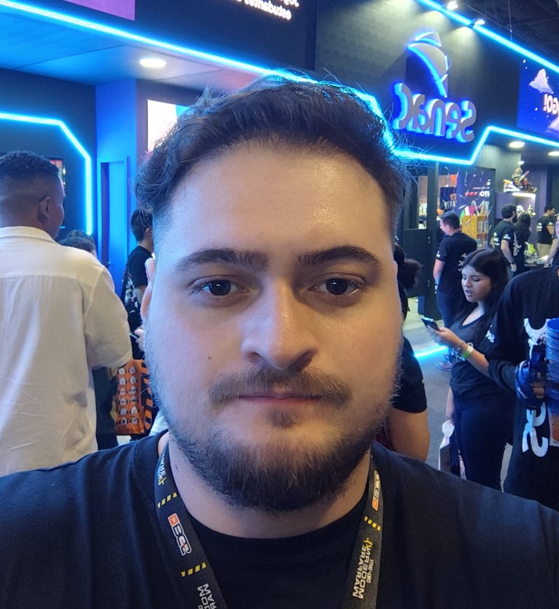

Matheus Rodrigues Puerta
Em busca da 1ª oportunidade em TISobre Mim
Sou o Matheus, tenho 28 anos e sou pai de duas crianças que amo muito: Mariana e Oliver. Sou graduado em Tecnologia em Análise e Desenvolvimento de Sistemas pela Unifatecie e, atualmente, curso Técnico em Programação de Jogos Digitais e Engenharia de Software.
Conhecimentos Técnicos
Durante minha formação, desenvolvi projetos e competências sólidas nas seguintes tecnologias e práticas:
Diferenciais & Hobbies
Possuo facilidade para trabalhar em equipe e aprendizado ágil de novas ferramentas. Nas horas vagas, meus hobbies favoritos são jogar videogame e treinar na academia.